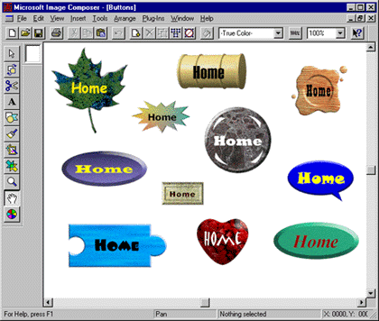
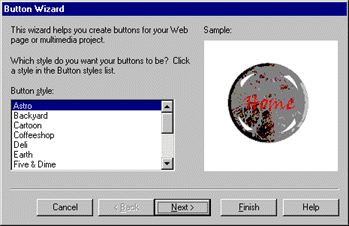
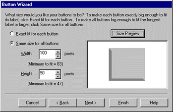
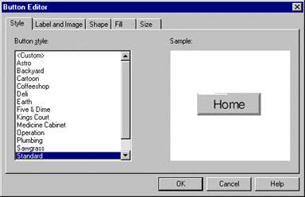
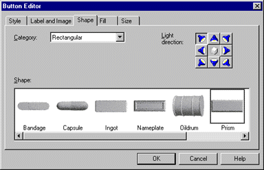
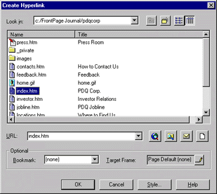

|
| ||
|
| ||
Brought to you by Inside Microsoft FrontPage, a ZD Journals publication. Click here for a free issue  .
.
Well-designed graphic buttons serve two functions on a Web site: They help users navigate the site, while reflecting the style the site is designed to portray. At the same time, they cost very little in terms of bandwidth, so pages download very quickly-especially after the graphics are cached.
If you choose a theme for your FrontPage 98 Web, the program will create attractive navigation buttons for you. But if you're the do-it-yourself type, you can create your own buttons almost as quickly with Image Composer 1.5, which is bundled with FrontPage 98. Figure A shows a variety of buttons we created using the program's new button tools. In this article, we'll show you how to create and edit your own buttons in Image Composer.

Figure A. With Image Composer 1.5, you can create custom buttons to reflect the style of your Web site
You create buttons using Image Composer's new Button Wizard. You can create up to 20 matching buttons based on one of the standard styles the wizard provides. Just pick a style and decide what to label the buttons and how big to make each one-then let the wizard do the rest.
Once you've created a button, you can use the Button Editor to modify it. The Button Editor dialog box offers dozens of button shapes and textures that you can choose from. You'll also use this dialog box to change the font attributes of your button's label and to resize it.
When you have a design you like, Image Composer will save it as a transparent GIF that uses the Web-safe 216-color palette. Now, let's see how the process works.
To get started, launch Image Composer and choose Button ... from the Insert menu. The Button Wizard will open, asking you to choose a style for your new button, as Figure B shows.

Figure B. You can choose one of 15 styles for your new button
We'll start off with a simple example, so scroll down to the bottom of the Button Style list and choose Standard. Click Next to move to the wizard's second page.
For our example, we'll create three buttons, so type 3 in the text field. Click Next again.
The wizard will now ask how you want to label the first button. Click Next to confirm the suggested label, Home. In the second name page, type Back, then click Next. Type Next in the third name page, then click Next again.
We now have to decide how big the buttons will be. The default selection, Exact Fit For Each Button, will scale the buttons horizontally based on the lengths of their labels. If you chose this option, a button named Contents would be twice as long as one named Home.
Instead of accepting the default, we'll set a standard size. To do so, click the Same Size For All Buttons radio button, as we've done in Figure C. Notice that minimum sizes are listed below the Width and Height text fields (e.g., "Minimum to fit = 83"). The wizard won't let you set a dimension smaller than the minimum, no matter how hard you try. (If you're not sure just how big 83 x 47 pixels is, you can click the Size Preview button.) For our example, set the button dimensions to 100 x 90, as shown in Figure C.

Figure C. We'll set our buttons to a constant size of 100 x 90 pixels.
Once you click Next to confirm your buttons' size, you'll see one more wizard page. Click Finish on this page to complete your buttons.
Image Composer always adds new sprites to the upper-left corner of the workspace. In this case, all three buttons will be stacked there. Drag them down into the composition space (the white area in the center of the workspace) and line them up. Now choose Actual Size from the View menu to get a better look at your creations.
While the buttons we've just created are nice, we can probably improve on them a little. That's where the Button Editor comes in handy. Let's modify the Home button so it looks like the one in the upper-right corner of Figure A.
To edit the button, either double-click it or select it and choose Button from the Edit menu. When you do, the Button Editor dialog box, shown in Figure D, will appear. At first glance, this dialog looks much like the Button Wizard dialog, complete with the list of 15 styles and the Sample pane. Actually, though, you're looking at just one of five pages in this dialog; the other four pages will let you edit every aspect of the Home button.
Figure D. The Button Editor dialog box lets you modify your button in dozens of ways.

We'll start by changing the way the label looks, so click the Label And Image tab. Here you can rename your button (in the Label text field) and change the font, size, style, and color of the label. Click the Font ... button to bring up the Font dialog box. We'll make only a couple of changes here. First, select Playbill from the Font dropdown list, then choose 24 from the Size dropdown list. If you wish, you can click the black color swatch and choose another color-just be sure to choose a dark color for our example. Click OK twice to return to the main editor dialog.
One other thing you can do on the Label And Image page is add an image to your button, which can appear above, below, beside, or underneath the label. However, we won't add an image to our sample button.
The fun really begins on the next page of the Button Editor. Click the Shape tab to go to the page shown in Figure E. Here you can choose from more than two dozen button shapes.

Figure E. Image Composer offers button shapes ranging from austere to outrageous.
Notice that the current shape is Prism, one of Image Composer's rectangular shapes. You can use the horizontal scroll bar to see the other rectangular shapes.
The shape we're looking for falls into the Funky category, so choose Funky from the Category dropdown list. Next, scroll all the way to the right and choose Waxseal. If you'd like, you can also change the light direction by clicking one of the spotlight buttons in the upper-right corner. Doing so will affect how shadows appear on the button.
Finally, we need to change the button's gray background to something a little fancier-the wood-grain pattern shown in Figure A. We'll make this change on the Fill page, so click the Fill tab now.
Image Composer supports three kinds of fills: color, gradient, and texture. Choose Texture from the Fill dropdown list to see all the textures the program includes. The texture we're looking for is Oakgrain, the sixth texture in the Fill Attributes list. Click once on the Oakgrain picture to select it.
The final page of the editor, Size, lets you resize the button. Since we've already chosen the size we want (in the Button Wizard), we'll skip that step here. Click OK to see your completed button.
Image Composer will let you edit only one button at a time. To make your other buttons look like the Home button, you can either edit them following the process we just completed or-better yet-you can duplicate the Home button and change the copies' labels.
To duplicate the Home button, select it and choose Duplicate from the Edit menu (or press [Ctrl] D). Double-click the copy to open it in the Button Editor. Then just switch to the Label And Image page and change the label.
Of course, you can make other changes as well. For example, if the new label is longer than the old one, you may need to make the button wider. You might also want to make different buttons different colors to reflect your site's hierarchy.
To use your new buttons in FrontPage, you first need to save them as separate GIF files. Select the Home button, choose Save Selection As... from the File menu, and type a descriptive name, such as home.gif. Navigate to where your Web site's images are stored and click Save. You may repeat this process with each of the other buttons, although we'll concentrate just on the Home button for now.
Next, switch to FrontPage Editor and choose Image ... from the Insert menu. Choose home.gif in the Image dialog box and click OK. The Home button will appear on your page, but, at this point, it's really just an image-it has no functionality. So, let's give it a function.
Click once on the button to select it, then click the Create or Edit Hyperlink button on the toolbar. In the resulting dialog box, shown in Figure F, select the page you want the button to link to and click OK. You now have a functional (and very attractive) Home button. To test it, hold down [Ctrl] and click on it.

Figure F. You can turn your graphic into a functional button in this FrontPage Editor dialog box.
Custom buttons are a great way to add visual impact to your Web site. The latest version of Image Composer makes creating these buttons a simple task. In this article, we've shown you how to create a button with Image Composer's Button Wizard and how to edit it with the Button Editor.
Did you find this material useful? Gripes? Compliments? Suggestions for other articles? Write us!
© 1999 Microsoft Corporation. All rights reserved. Terms of use.